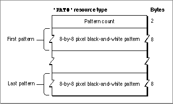

Legacy Document
Important: The information in this document is obsolete and should not be used for new development.
Important: The information in this document is obsolete and should not be used for new development.


The Pattern List Resource
You can use a pattern list resource to define an array of bit patterns. A pattern list resource is a resource of type'PAT#'. All pattern list resources that you create must have resource ID numbers greater than 128.To retrieve one of the bit patterns stored in a pattern list resource, you can use the
GetIndPatternprocedure, which is described on page 3-123. You can then specify that bit pattern for a fill pattern, background pattern, or pen pattern.If you examine the compiled version of a pattern list resource, as represented in
Figure 3-30, you find that it contains the following information:
Figure 3-30 Format of a compiled pattern list (
- Pattern count. This is the number of bit patterns defined in this resource.
- An array of bit patterns, each of which contains 8 bytes of information that define the 8-by-8 pixel square of the pattern.
'PAT#') resource